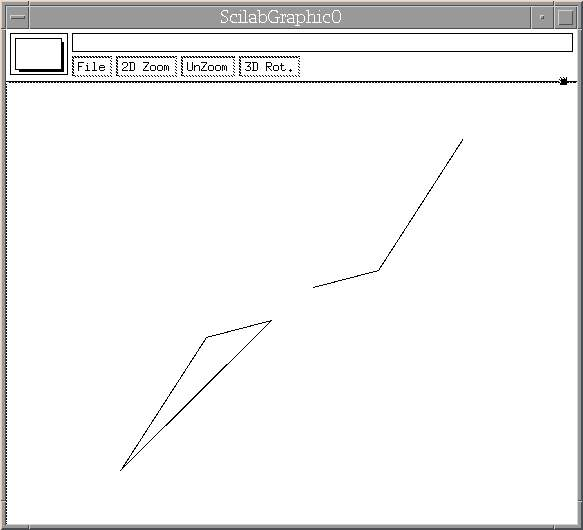
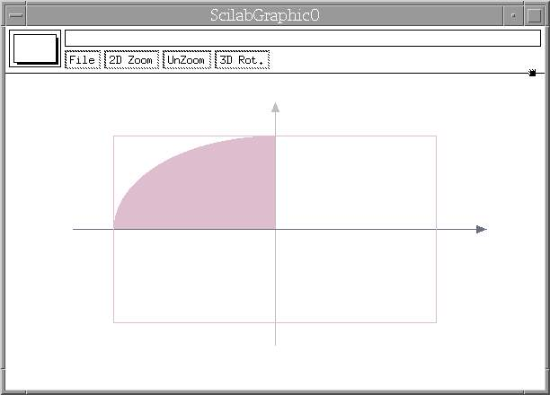
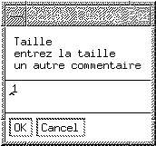
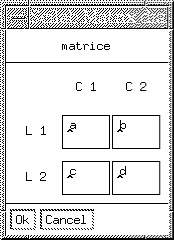
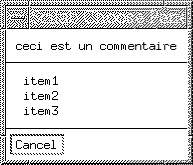
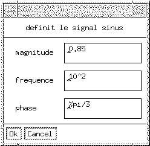
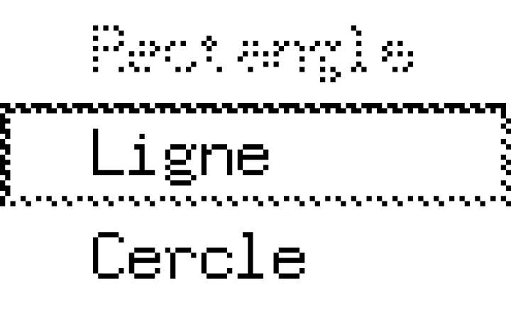
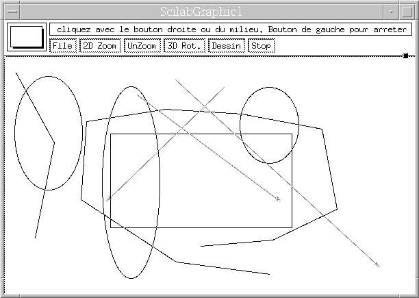

http://www.saphir-control.fr/

| http://www.saphir-control.fr/
|
-->apropos xclick -->help xclick
-->[wrect,frect]=xgetech() frect = ! 0. 0. 1. 1. ! wrect = ! 0. 0. 1. 1. !qui renvoit dans wrect (Working RECTangle) un quadruplet [x,y,w,h] contenant les coordonnées (x,y) du coin supérieur gauche et les proportions (w,h) de la zone de travail (w est la largeur et h la hauteur). Ce sont les proportions relatives à la taille courante de la fenêtre. L'échelle de proportion dans cette zone de travail est donnée par frect (Frame RECTangle), un quadruplet [xmin, ymin, xmin, xmax].
--> wrect=[0.5,0,0.5,1] --> xsetech(wrect);signifie que seule la moité droite de la fenêtre sera affectée.
--> wrect=[0,0,1,1]; // on selectionne toute la fenetre --> frect=[-10 -10 10 10]; // definition de l'\'echelle --> xsetech(wrect,frect) ;
-->wrect=[0 0 1 1];
-->frect=[-10 -10 10 10];
-->xsetech(wrect,frect); // definition de l'\'echelle
-->xarrows([0 0],[-10 10],0.5);
// dessine les axes sous forme de fleches
-->xarrows([-10 10],[-0 0],0.5);
-->xrect(0 ,0 ,7 ,7);
Affichons un rectangle de coins supérieur gauche (x0=0,y0=6) et
inférieur droit (x1=5, y1=0) :
-->green = 3;xset("foreground",green);xrect(0, 6, 5,6);//w=x1-x0 et h=y1-y0
La variante xfrect dessine un rectangle plein (f comme
filled) en utilisant la couleur définie par xset. xrects
dessine un ensemble de n rectangles (s pour plusieurs rectangles),
dont les quadruplets sont sous la forme d'une matrice 4 lignes et n colonnes
(4xn). Devinez ce que fait xfrects !-->xrects([[0 ;0 ;7 ;7], [0; 6; 5;6]], [-1 2])
Remarquez qu'un indice de couleur positif rempli le rectangle, un indice négatif dessine le contour.
Figure 1:
-->xarrows([0 -10; 0 10], [-10 0; 10 0],...
0.5, [3 4]);
Pour dessiner une ligne brisée (un ensemble de segments reliés),
Scilab propose l'intruction : --> xpoly([1 4 8],[ 1 2 10],"lines",0); // polygone ouvert --> xpoly([-1 -4 -8],[ -1 -2 -10],"lines",1); // polygone ferme

Figure 2: Polyline.
-->xrect(0,0,5,5);
-->xset("pattern",2)
-->xfarc(-8,8,16,16,90*64,90*64);
Il existe les mêmes variantes que pour xrect : xfarc, xarcs et xfarcs. Par exemple :

Figure 3: Arc plein.
-->arcs=[-8 0 0.5; // coin superieur gauche x --> 8 0.0 0.5; // coin superieur gauche y --> 0.5 1.0 0.5; // largeur --> 0.5 0.5 1.0; // hauteur --> 0.0 0.0 0.0; // angle de depart --> 180*64 360*64 90*64];// angle de rotation -->xarcs(arcs,[1,2,3]);// trois arcs de trois couleurs differentes
-->[button, x, y, gwin, str]=xclick();
//j'appuie sur le bouton gauche de la souris
//dans la fenetre graphique 0
str =
void
gwin =
0.
y =
- 1.4615385
x =
- 12.138085
button =
0.
--> [button, x, y, gwin, str] = xclick();
// j appuie sur a dans la fenetre
// graphique 0
str =
void
gwin =
0.
y =
- 12.923077
x =
- 11.113586
button =
97.
L'instruction rep=xgetmouse([flag]), renvoit la position de la souris
dans la fenêtre courante. Si flag est présent les clics
sont mémorisés dans la queue d'évènements et ne
sont pas effacés lors de l'appel à xgetmouse. Cette
fonction renvoit un vecteur rep=[x y bouton], dans lequel x
et y représentent la position de la souris en
coordonnées utilisateurs (cf. xsetech), et bouton est un entier
égal à 0, 1 ou 2 selon le bouton de souris cliqué, -1 s'il
s'agit d'un mouvement de souris. Contrairement à xclick,
xgetmouse n'attend pas de clic de souris ou de touche clavier. Il
permet ainsi de connaître à tout moment la position de la souris.
-->a=xgetmouse();//je place la souris sur la fenetre
a =
! - 8.5746102 - 8.6923077 - 1. !
-->a=xgetmouse();//je clic sur le bouton gauche
a =
! - 1.8040089 1.3846154 0. !
-->while(1)
-->rep=xgetmouse()
//renvoit dans la fenetre courante
//la position de la souris
// lors de son deplacement
-->end;
L'instruction locate([n[,flag]]) renvoit la matrice des points
selectionnés par un clic. Si n est supérieur à 0,
alors n points devront être impérativement
selectionnés. Si n est égal à -1, les points sont
selectionnés par le bouton droit ou milieu jusqu'à ce que le
bouton gauche ait été cliqué. Si flagest
égal à 1, alors une croix est placée à chaque
coordonnée selectionnée.
-->a=locate(3,1);//je clic 3 fois et dessine 3 croix a = ! - 5.2783964 - 1.3585746 - 5.6347439 ! ! 10.615385 10.153846 6.7692308 !
-->x_dialog(['Taille';'entrez la taille';'un autre commentaire'],'1') ans = 1

Figure 4: Boîte de dialogue.
-->x_mdialog('matrice',['L 1'; 'L 2'],['C 1' ;'C 2'],['a','b';'c', 'd'])
ans =
!a b !
! !
!c d !
Pour convertir les chaînes de caractères en valeurs
numériques vous pouvez utiliser la fonction evstr sur les
éléments de la matrice.

Figure 5: Boîte de dialogues multiples.
--> n=x_choose(['item1';'item2';'item3'],['ceci est un commentaire'])
n =
2.

Figure 6: Boite de choix.
--> labels=["magnitude";"frequence";"phase "];
--> [ok,mag,freq,ph]=getvalue("definit le signal sinus",labels,...
--> list("vec",1,"vec",1,"vec",1),["0.85";"10^2";"%pi/3"])
ph =
1.0471976
freq =
100.
mag =
0.85
ok =
T

Figure 7: Boite de dialogue évoluée.
--> menu_name = 'Dessin';submenus est un vecteur de chaîne de caractères désignant les labels des sous-menus. Par exemple :
--> submenus = ['Rectangle';'Ligne';'Cercle']actionest une liste(cf. Linux Magazine numéro 14) de deux éléments : action=list(flag,proc_name), où flag est un entier. Lorsqu'il est mis à 0, sa valeur par défaut, action est une chaîne de caractère nommant soit une variable (qui contient une suite d'instructions Scilab) soit une fonction Scilab. Le cas flag=1 est réservé à l'appel d'une routine externe C ou FORTRAN. Par exemple :
--> action = list(0,'Dessin');proc_name est la chaîne de caractères désignant ``Dessin'' tel que les callbacks du menu Dessin soient des chaînes de caractères ordonnées dans un tableau
-->Dessin_0(1) = 'xrects([-1; 1 ;3; 3])';
//premier sous-menu de la fenetre 0
-->addmenu(0, menu_name, submenus, action);
Remarquez le _0 à la fin du nom de la procédure
Dessin. Il s'agit du numéro de fenêtre graphique (gwin)
à laquelle est associé le bouton.--> unsetmenu(0,'Dessin');désactive le menu Dessin, alors que
--> unsetmenu(0,'Dessin',1)ne désactive que le menu Dessin/Rectangle en laissant actifs Dessin/Ligne et Dessin/Cercle.
Bien sûr on peut les réactiver par la fonction setmenu. Les paramètres d'appel de cette fonction sont identiques à celle de unsetmenu. L'exemple suivant :

Figure 8: Désactivation de Dessin/Rectangle.
--> setmenu(0,menu_name);active le menu Dessin, alors que
--> setmenu(0,menu_name,1)active de nouveau le menu Dessin/Rectangle.
--> delmenu(menu_name);

Figure 9: Un petit programme.
function [a]=graph()
STOP = 0; // variable me permettant de boucler dessus
//affichage d'une nouvelle fenetre
disp('creation d''une nouvelle fenetre') ;
gwin = (max(winsid())+1);// genere un nouveau numero de fenetre
xset('window',gwin);// affiche la nouvelle fenetre
// nouveaux coordonnees utilisateur
xsetech([0 0 1 1],[-10 -10 10 10]);
// ajout des menus de dessins
// definition du nom du menu
Nom_de_Menu = 'Dessin';
// definition des sous-menus
Sub_Menu = ['Rectangle';'Polyline';'Fleche';'Cercle'];
// definition du type de fonctions associees au menu Dessin
Action = list(0,'Dessin');
// definition du vecteur de callbacks
execstr('Dessin_' + string(gwin) + '= [''Rec()''; ''Poly()''; ...
''Fleche()''; ''Cercle()'']');
addmenu(gwin, Nom_de_Menu, Sub_Menu,Action);
//ajout de menu d'arret
addmenu(gwin,'Stop');
execstr('Stop_' + string(gwin) + '= ''STOP = 1''');
//boucle infinie
while (STOP == 0)
end;
a= 0;
// fonction de dessin du rectangle
function Rec()
xset("alufunction",6);//nous passons en mode xor
xinfo(" drawing a rectangle ");//nous affichons de l'information
[b,x0,y0]=xclick();
rep=[x0,y0,-1];
x=x0; // au depart les coordonnees
y=y0; // sont confondues
xrect(x0,y0,x-x0,y-y0); // on affiche une premiere fois
// un rectangle
while rep(3)==-1 then
rep=xgetmouse(0);
if (rep(3) ~= 2) then
xrect(min(x,x0),max(y,y0),abs(x-x0),abs(y0-y));
// on efface l'acien rectangle
x=rep(1); y=rep(2); // on affiche le nouveau
xrect(min(x,x0),max(y,y0),abs(x-x0),abs(y0-y));
else
xrect(min(x,x0),max(y,y0),abs(x-x0),abs(y0-y));
end;
end;
xset("alufunction",3);//nous repassons en mode normale
// fonction de dessin de la ligne bris\'ee
function Poly()
xset("alufunction",6);//nous passons en mode xor
xinfo(" cliquez avec le bouton droite ou du milieu...
Bouton de gauche pour arreter ");//nous affichons de l'information
a=locate(-1,1);// nous definissons les points a relier
xpoly(a(1,:),a(2,:),"lines")
xset("alufunction",3);
Pour pouvoir manipuler ultèrieurement les objets graphiques que vous
venez de construire, vous pouvez sauvegarder leurs caractéristiques et
leurs coordonnées en utilisant des list (cf lm14).This document was translated from LATEX by HEVEA.